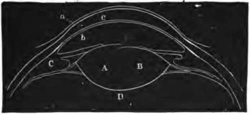

The Blind Spot
Description
This section is from the book "The Human Body: An Elementary Text-Book Of Anatomy, Physiology, And Hygiene", by H. Newell Martin. Also available from Amazon: The Human Body.
The Blind Spot
Where the optic nerve enters the retina it forms a small elevation (Fig. 90), from which nervefibres radiate. This elevation is quite blind, because it possesses neither rods nor cones. Its blindness may be readily demonstrated. Close the left eye and look steadily with the right at the cross (Fig. 91), holding the page vertically in front of the face, and moving it alternately from and towards yon. The eye must all the time be kept looking fixedly at the cross. When the book is about ten inches from the eye the white disc entirely disappears from view: its image then falls on the part of the retina where the optic nerve enters, and causes no visual sensation.
Fig. 90. The right retina as it would be seen if the front part of the eyebaU with the lens and vitreous humor were removed. The white disc to the right marks the entry of the optic nerve (blind spot); the lines radiating from this are the retinal arteries and veins. The email central dark patch is the yellow spot, the region of most acute vision.
Fig. 91.
What is meant by the "blind spot"? Describe a method of demonstrating its blindness.
Light consists of vibrations in an ether which pervades space. An object which sets up no waves in the ether does not excite the visual nervous apparatus, and appears black; an object which sets up ethereal vibrations capable of exciting the rods and cones of the retina appears white or colored when we look at it. The ethereal vibrations enter the eye through the cornea, pass on through the pupil, and reach and stimulate the retina.
The Refracting Media Of The Eye
The Refracting Media Of The Eye are three in number: (1) the aqueous humor; (2) the crystalline lens; (3) the vitreous humor. Their relative positions are shown in Fig. 88. These media act like a convex lens, such as a common burning-glass, and bend the rays of light which pass through them (Fig. 92), so that all those which start from one point of an external object meet again in a focus on one point of the retina. In this way a small and inverted image of the things at which we look is formed on the retina, and stimulates its rods and cones.
Fig. 92. Illustrating the formation behind a convex lens of a diminished and inverted image of an object placed in front of it.
What is light? When does an object appear black? Name the refracting media of the eye. State their relative position. Describe their action.
Accommodation
In the healthy eyeball the crystalline lens is controlled by muscles which change its convexity, making this greater when we look at near objects, and less when we look at distant objects. When the lens is very convex we cannot see a distant object distinctly, and when it is less convex we only dimly see a near object. For example, standing at a window behind a lace curtain we can look at the curtain and see its threads plainly, but while so doing we only see indistinctly houses on the other side of the street; because the convexity of the lens is then such as to focus light from the near object on the retina, and not that from the distant. We can, however, "look at" the houses over the way and see them plainly; but then we no longer see the curtain distinctly, because the lens has so changed its form as to focus light from the far object on the retina, instead of light from the near. The power of changing the form of the lens according as near or distant objects are looked at is called "accommodation".
Fig. 93. Section of front part of eyeball showing the change in the form of the lens when near and distant objects are looked at. a, c, 6, cornea; A, lens when near object is looked at; B, lens when distant object is looked at.
When we look at an object, what is formed on the retina?
How is the form of the crystalline lens controlled? When is its convexity greater? Can we see near and distant objects distinctly at the same moment? Illustrate.
Fig. 94. Diagram illustrating the path of parallel rays after entering an emmetropic (A), a myopic (B), and a hypermetropic (c) eye.
Continue to: